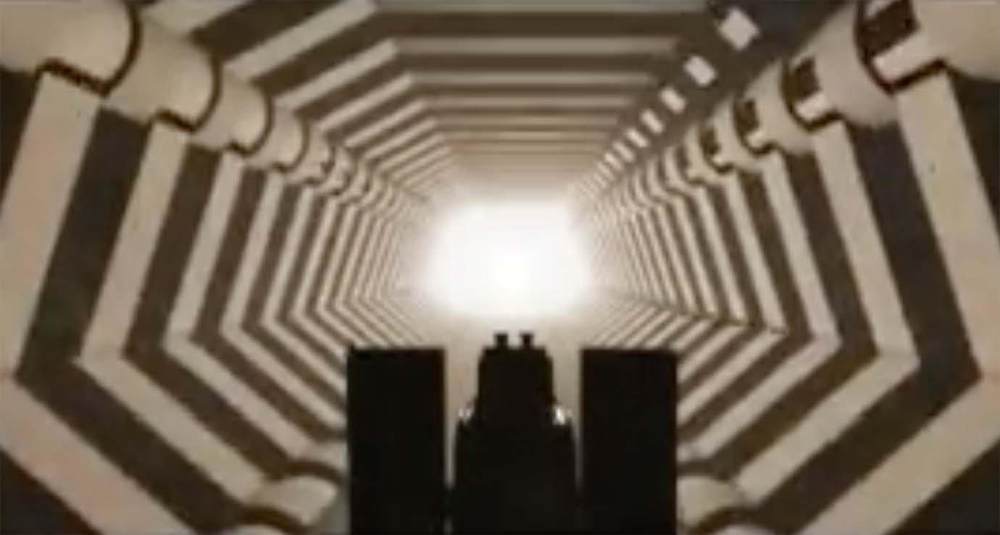

English
Español
Català
Los Ciclos (Cycles)
JP Carrascal (2007)
Sound design for the short film 'Los Ciclos' by Juan Manuel Acuña

A short film directed by Juan Manuel Acuña. I designed the sound effects for the film. Original score composed by Alejandro Ramírez Rojas.
Links:
Watch on YouTube
← Back